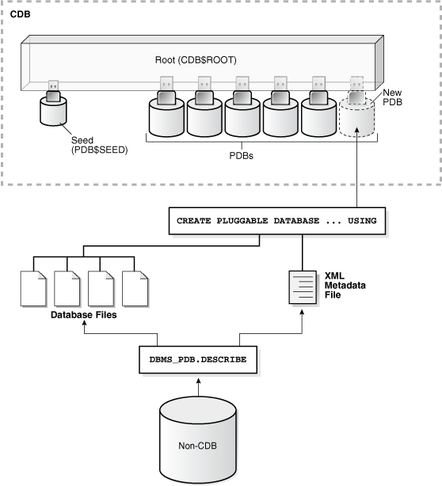

Upgrade Scenarios for Non-CDB Oracle Databases
Review these topics to understand the upgrade scenarios and procedures for non-CDB Oracle Databases
Note:
Starting with Oracle Database 12c, release 1 (12.1), non-CDB architecture is deprecated. It can be desupported in a future release. Oracle Database deployed with the multitenant architecture is the default configuration option. All Oracle Database releases earlier than Oracle Database 12c release 1 (12.1.0.1) use non-CDB architecture.
Caution:
You cannot downgrade a database after you have set the compatible initialization parameter to 12.1.0.2. A pluggable database (PDB) downgrade is possible only if the compatibility is set to 12.1.0.1. There can be additional restrictions on downgrading.
Before starting an upgrade or a downgrade, Oracle strongly recommends that you upgrade your source and target databases to the most recent Quarterly Release Update (Update), Release Update Revision (Revision), bundle patch, or patch set update (BP or PSU).
- Download the Latest AutoUpgrade Utility
To ensure that you obtain the most recent updates to checks to help to ensure a smooth upgrade, download the most recent AutoUpgrade Utility. - About Adopting a Non-CDB as a PDB Using a PDB Plugin
To manually adopt a non-CDB as a PDB, you generate an XML file that describes a non-CDB, and use theDBMS_PDB.DESCRIBEprocedure. Afterward, plug in the non-CDB, just as you plug in an unplugged PDB. - Adopting a Non-CDB as a PDB
You can adopt (move) a non-CDB into a PDB by using theDBMS_PDB.DESCRIBEprocedure. - Oracle Label Security Integration in a Multitenant Environment
You can use Oracle Label Security in a multitenant environment. - Manually Upgrading Non-CDB Architecture Oracle Databases
This procedure provides steps for upgrading non-CDB architecture Oracle Databases. - Upgrading Oracle Database Using Fleet Patching and Provisioning
In Oracle Database 12c release 2 (12.2) and later releases, you can use Fleet Patching and Provisioning to upgrade an earlier release Oracle Database.
Download the Latest AutoUpgrade Utility
To ensure that you obtain the most recent updates to checks to help to ensure a smooth upgrade, download the most recent AutoUpgrade Utility.
The AutoUpgrade Utility continues to be developed after the initial software release. Oracle recommends that you always download the most recent version from My Oracle Support note 2485457.1
Related Topics
Parent topic: Upgrade Scenarios for Non-CDB Oracle Databases
About Adopting a Non-CDB as a PDB Using a PDB Plugin
To manually adopt a non-CDB as a PDB, you generate an XML file that describes
a non-CDB, and use the DBMS_PDB.DESCRIBE procedure. Afterward, plug in the
non-CDB, just as you plug in an unplugged PDB.
If you choose not to use the Capture Replay method of automatically adopting
and upgrading a non-CDB to a PDB, then you can use the manual procedure of describing
the non-CDB, and then adopting the non-CDB to a PDB. Create the PDB with the
CREATE PLUGGABLE DATABASE ... USING statement. When the non-CDB is
plugged in to a CDB, it is a new PDB, but not usable until the data dictionary is
converted, using the ORACLE_HOME/rdbms/admin/noncdb_to_pdb.sql script.
Figure 4-1 Plug In a Non-CDB Using the DBMS_PDB.DESCRIBE Procedure

Description of "Figure 4-1 Plug In a Non-CDB Using the DBMS_PDB.DESCRIBE Procedure"
You can use the same technique to create a new application PDB in an application container.
Parent topic: Upgrade Scenarios for Non-CDB Oracle Databases
Adopting a Non-CDB as a PDB
You can adopt (move) a non-CDB into a PDB by using the
DBMS_PDB.DESCRIBE procedure.
-
Create the CDB if it does not exist.
-
Ensure that the non-CDB is in a transactionally-consistent state.
-
Place the non-CDB in read-only mode.
-
Connect to the non-CDB, and run the
DBMS_PDB.DESCRIBEprocedure to construct an XML file that describes the non-CDB.The current user must have
SYSDBAadministrative privilege. The user must exercise the privilege usingAS SYSDBAat connect time.For example, to generate an XML file named
ncdb.xmlin the/disk1/oracledirectory, run the following procedure:BEGIN DBMS_PDB.DESCRIBE( pdb_descr_file => '/disk1/oracle/ncdb.xml'); END; /After the procedure completes successfully, you can use the XML file and the non-CDB database files to plug the non-CDB into a CDB.
-
Run the
DBMS_PDB.CHECK_PLUG_COMPATIBILITYfunction to determine whether the non-CDB is compatible with the CDB.When you run the function, set the following parameters:
-
pdb_descr_file- Set this parameter to the full path to the XML file. -
pdb_name- Specify the name of the new PDB. If this parameter is omitted, then the PDB name in the XML file is used.
For example, to determine whether a non-CDB described by the
/disk1/oracle/ncdb.xmlfile is compatible with the current CDB, run the following PL/SQL block:SET SERVEROUTPUT ON DECLARE compatible CONSTANT VARCHAR2(3) := CASE DBMS_PDB.CHECK_PLUG_COMPATIBILITY( pdb_descr_file => '/disk1/oracle/ncdb.xml', pdb_name => 'NCDB') WHEN TRUE THEN 'YES' ELSE 'NO' END; BEGIN DBMS_OUTPUT.PUT_LINE(compatible); END; /If the output is
YES, then the non-CDB is compatible, and you can continue with the next step. If the output isNO, then the non-CDB is not compatible, and you can check thePDB_PLUG_IN_VIOLATIONSview to see why it is not compatible. All violations must be corrected before you continue. For example, any version or patch mismatches should be resolved by running an upgrade or the datapatch utility. After correcting the violations, runDBMS_PDB.CHECK_PLUG_COMPATIBILITYagain to ensure that the non-CDB is compatible with the CDB. -
-
Shut down the non-CDB.
-
Plug in the non-CDB.
For example, the following SQL statement plugs in a non-CDB, copies its files to a new location, and includes only the
tbs3user tablespace from the non-CDB:CREATE PLUGGABLE DATABASE ncdb USING '/disk1/oracle/ncdb.xml' COPY FILE_NAME_CONVERT = ('/disk1/oracle/dbs/', '/disk2/oracle/ncdb/') USER_TABLESPACES=('tbs3');If there are no violations, then do not open the new PDB. You will open it in the following step.
The
USER_TABLESPACESclause enables you to separate data that was used for multiple tenants in a non-CDB into different PDBs. You can use multipleCREATE PLUGGABLE DATABASEstatements with this clause to create other PDBs that include the data from other tablespaces that existed in the non-CDB. -
Run the
ORACLE_HOME/rdbms/admin/noncdb_to_pdb.sqlscript. This script must be run before the PDB can be opened for the first time.If the PDB was not a non-CDB, then running the
noncdb_to_pdb.sqlscript is not required. To run thenoncdb_to_pdb.sqlscript, complete the following steps:-
Access the PDB.
The current user must have
SYSDBAadministrative privilege, and the privilege must be either commonly granted or locally granted in the PDB. The user must exercise the privilege usingAS SYSDBAat connect time. -
Run the
noncdb_to_pdb.sqlscript:@$ORACLE_HOME/rdbms/admin/noncdb_to_pdb.sql
The script opens the PDB, performs changes, and closes the PDB when the changes are complete.
-
-
Open the new PDB in read/write mode.
You must open the new PDB in read/write mode for Oracle Database to complete the integration of the new PDB into the CDB. An error is returned if you attempt to open the PDB in read-only mode. After the PDB is opened in read/write mode, its status is
NORMAL. -
Back up the PDB.
A PDB cannot be recovered unless it is backed up.
Note:
If an error is returned during PDB creation, then the PDB being created can be in an
UNUSABLEstate. To check the state of a PDB, query theCDB_PDBSorDBA_PDBSview. You can learn more about PDB creation errors by checking the alert log. An unusable PDB can only be dropped. You must drop an unusable PDB before you try to create a PDB with the same name as the unusable PDB can be created.
Parent topic: Upgrade Scenarios for Non-CDB Oracle Databases
Oracle Label Security Integration in a Multitenant Environment
You can use Oracle Label Security in a multitenant environment.
In a multitenant environment, pluggable databases (PDBs) can be plugged in and out of a multitenant container database (CDB) or an application container.
Note the following:
-
Each PDB has its own Oracle Label Security metadata, such as policies, labels, and user authorizations. The
LBACSYSschema is a common user schema. -
Before you plug a PDB into a CDB, if the database does not have Oracle Label Security installed, then ensure that you have run the
$ORACLE_HOME/rdbms/admin/catols.sqlscript on the database to install the label-based framework, data dictionary, data types, and packages. This script creates theLBACSYSaccount. -
Because Oracle Label Security policies are scoped to individual PDBs, you can create individual policies for each PDB. A policy defined for a PDB can be enforced on the local tables and schema objects contained in the PDB.
-
In a single CDB, there can be multiple PDBs, each configured with Oracle Label Security.
-
You cannot create Oracle Label Security policies in the CDB root or the application root.
-
You cannot enforce a local Oracle Label Security policy on a common CDB object or a common application object.
-
You cannot assign Oracle Label Security policy labels and privileges to common users and application common users in a pluggable database.
-
You cannot assign Oracle Label Security privileges to common procedures or functions and application common procedures or functions in a pluggable database.
-
If you are configuring Oracle Label Security with Oracle Internet Directory, then be aware that the same configuration must be used throughout with all PDBs contained in the CDB. You can determine if your database is configured for Oracle Internet Directory by querying the
DBA_OLS_STATUSdata dictionary view as follows from within any PDB:SELECT STATUS FROM DBA_OLS_STATUS WHERE NAME = 'OLS_DIRECTORY_STATUS';
If it returns
TRUE, then Oracle Label Security is Internet Directory-enabled. Otherwise, it returnsFALSE.
Related Topics
Parent topic: Upgrade Scenarios for Non-CDB Oracle Databases
Manually Upgrading Non-CDB Architecture Oracle Databases
This procedure provides steps for upgrading non-CDB architecture Oracle Databases.
Note:
Starting with Oracle Database 12c Release 1 (12.1), non-CDB architecture is deprecated. It can be desupported in a future release.
Before using this procedure, complete the following steps:
-
Install the Oracle Database software
-
Prepare the new Oracle home
-
Run AutoUpgrade with the preupgrade parameter
Steps:
-
If you have not done so, run the Pre-Upgrade Information Tool. Review the Pre-Upgrade Information Tool output and correct all issues noted in the output before proceeding.
For example, on Linux or Unix systems:
$ORACLE_HOME/jdk/bin/java -jar /opt/oracle/product/19.0.0/rdbms/admin/preupgrade.jar FILE TEXT -
Ensure that you have a proper backup strategy in place.
-
If you have not done so, prepare the new Oracle home.
-
(Conditional) For Oracle RAC environments only, enter the following commands to set the initialization parameter value for CLUSTER_DATABASE to FALSE:
ALTER SYSTEM SET CLUSTER_DATABASE=FALSE SCOPE=SPFILE; -
Shut down the database. For example:
SQL> SHUTDOWN IMMEDIATE -
If your operating system is Windows, then complete the following steps:
-
Stop the
OracleServiceSIDOracle service of the database you are upgrading, whereSIDis the instance name. For example, if yourSIDisORCL, then enter the following at a command prompt:C:\> NET STOP OracleServiceORCL -
Delete the Oracle service at a command prompt using
ORADIM. Refer to your platform guide for a complete list of theORADIMsyntax and commands.For example, if your
SIDisORCL, then enter the following command.C:\> ORADIM -DELETE -SID ORCL -
Create the service for the new release Oracle Database at a command prompt using the
ORADIMcommand of the new Oracle Database release.Use the following syntax, where
SIDis your database SID,PASSWORDis your system password,USERSis the value you want to set for maximum number of users, andORACLE_HOMEis your Oracle home:C:\> ORADIM -NEW -SID SID -SYSPWD PASSWORD -MAXUSERS USERS -STARTMODE AUTO -PFILE ORACLE_HOME\DATABASE\INITSID.ORAMost Oracle Database services log on to the system using the privileges of the Oracle software installation owner. The service runs with the privileges of this user. The
ORADIMcommand prompts you to provide the password to this user account. You can specify other options usingORADIM.In the following example, if your
SIDisORCL, yourpassword(SYSPWD) isTWxy5791, the maximum number of users (MAXUSERS) is 10, and the Oracle home path isC:\ORACLE\PRODUCT\19.0.0\DB, then enter the following command:C:\> ORADIM -NEW -SID ORCL -SYSPWD TWxy5791 -MAXUSERS 10 -STARTMODE AUTO -PFILE C:\ORACLE\PRODUCT\19.0.0\DB\DATABASE\INITORCL.ORAORADIMwrites a log file to theORACLE_HOME\databasedirectory.Note:
If you use an Oracle Home User account to own the Oracle home, then the ORADIM command prompts you for that user name and password.
-
-
If your operating system is Linux or UNIX, then perform the following checks:
-
Your
ORACLE_SIDis set correctly -
The
oratabfile points to the new Oracle home -
The following environment variables point to the new Oracle Database directories:
-
ORACLE_HOME -
PATH
-
-
Any scripts that clients use to set the
$ORACLE_HOMEenvironment variable must point to the new Oracle home.
Note:
If you are upgrading an Oracle Real Application Clusters database, then perform these checks on all Oracle Grid Infrastructure nodes where the Oracle Real Application Clusters database has instances configured.
-
-
Log in to the system as the Oracle installation owner for the new Oracle Database release.
-
Start SQL*Plus in the new Oracle home from the admin directory in the new Oracle home directory.
For example:
$ cd $ORACLE_HOME/rdbms/admin $ pwd /u01/app/oracle/product/19.0.0/dbhome_1/rdbms/admin $ sqlplus -
Copy the SPFILE.ORA or INIT.ORA file from the old Oracle home to the new Oracle home.
-
Connect to the database that you want to upgrade using an account with SYSDBA privileges:
SQL> connect / as sysdba -
Start the non-CDB Oracle Database in upgrade mode:
SQL> startup upgradeIf errors appear listing desupported initialization parameters, then make a note of the desupported initialization parameters and continue with the upgrade. Remove the desupported initialization parameters the next time you shut down the database.
Note:
Starting up the database in
UPGRADEmode enables you to open a database based on an earlier Oracle Database release. It also restricts log-ins toAS SYSDBAsessions, disables system triggers, and performs additional operations that prepare the environment for the upgrade. -
Exit SQL*Plus.
For example:
SQL> EXIT -
Run the Parallel Upgrade Utility (
catctl.pl) script, using the upgrade options that you require for your upgrade.You can run the Parallel Upgrade Utility as a command-line shell command by using the
dbupgradeshell command, which is located inOracle_home/bin. If you set the PATH environment variable to includeOracle_home/bin, then you can run the command directly from your command line. For example:$ dbupgradeNote:
-
When you run the Parallel Upgrade Utility command, you can use the
-loption to specify the directory that you want to use for spool log files.
-
-
The database is shut down after a successful upgrade. Restart the instance so that you reinitialize the system parameters for normal operation. For example:
SQL> STARTUPThis restart, following the database shutdown, flushes all caches, clears buffers, and performs other housekeeping activities. These measures are an important final step to ensure the integrity and consistency of the upgraded Oracle Database software.
Note:
If you encountered a message listing desupported initialization parameters when you started the database, then remove the desupported initialization parameters from the parameter file before restarting it. If necessary, convert the
SPFILEto aPFILE, so that you can edit the file to delete parameters. -
Run
catcon.plto startutlrp.sql, and to recompile any remaining invalid objects.For example:
$ORACLE_HOME/perl/bin/perl catcon.pl -n 1 -e -b utlrp -d '''.''' utlrp.sqlBecause you run the command using
-b utlrp, the log fileutlrp0.logis generated as the script is run. The log file provides results of the recompile. -
Run
postupgrade_fixups.sql. For example:SQL> @postupgrade_fixups.sqlNote:
If you did not specify to place the script in a different location, then it is in the default path
Oracle_base/cfgtoollogs/SID/preupgrade, whereOracle_baseis your Oracle base home path, andSIDis your unique database name. -
Run
utlusts.sql. The script verifies that all issues are fixed.For example:
SQL> @$ORACLE_HOME/rdbms/admin/utlusts.sqlThe log file
utlrp0.logis generated as the script is run, which provides the upgrade results. You can also review the upgrade report inupg_summary.log.To see information about the state of the database, run
utlusts.sqlas many times as you want, at any time after the upgrade is completed. If theutlusts.sqlscript returns errors, or shows components that do not have the statusVALID, or if the version listed for the component is not the most recent release, then refer to the troubleshooting section in this guide. -
Ensure that the time zone data files are current by using the
DBMS_DST PL/SQLpackage to upgrade the time zone file. You can also adjust the time zone data files after the upgrade. -
Exit from SQL*Plus
For example:
SQL> EXIT -
(Conditional) If you are upgrading an Oracle Real Application Clusters database, then use the following command syntax to upgrade the database configuration in Oracle Clusterware:
srvctl upgrade database -db db-unique-name -oraclehome oraclehomeIn this syntax example,
db-unique-nameis the database name (not the instance name), andoraclehomeis the Oracle home location in which the database is being upgraded. TheSRVCTLutility supports long GNU-style options, in addition to short command-line interface (CLI) options used in earlier releases. -
(Conditional) For Oracle RAC environments only, after you have upgraded all nodes, enter the following commands to set the initialization parameter value for CLUSTER_DATABASE to TRUE, and start the database, where
db_unique_nameis the name of the Oracle RAC database:ALTER SYSTEM SET CLUSTER_DATABASE=TRUE SCOPE=SPFILE; srvctl start database -db db_unique_name
Your database is now upgraded. You are ready to complete post-upgrade procedures.
Caution:
If you retain the old Oracle software, then never start the upgraded database with the old software. Only start Oracle Database using the start command in the new Oracle Database home.
Before you remove the old Oracle environment, relocate any data files in that environment to the new Oracle Database environment.
See Also:
Oracle Database Administrator’s Guide for information about relocating data files
Parent topic: Upgrade Scenarios for Non-CDB Oracle Databases
Upgrading Oracle Database Using Fleet Patching and Provisioning
In Oracle Database 12c release 2 (12.2) and later releases, you can use Fleet Patching and Provisioning to upgrade an earlier release Oracle Database.
You upgrade a database with Fleet Patching and Provisioning by creating a copy of the new Oracle Database release, and using the command rhpctl upgrade database to upgrade the earlier release Oracle Database. The upgrade is an out-of-place upgrade. After the upgrade is complete, listeners and other initialization variables are set to point to the new Oracle home. Refer to Oracle Clusterware Administration and Deployment Guide for more information about how to create Fleet Patching and Provisioning images.
Use this overview of the steps to understand how to upgrade an earlier Oracle Database release by using Fleet Patching and Provisioning:
-
Install a new Oracle Database release.
-
Patch, test, and configure the database to your specifications for a standard operating environment (SOE).
-
Create a Fleet Patching and Provisioning Gold Image from the SOE release Oracle Database home.
-
Complete an upgrade to a new Oracle Grid Infrastructure release on the servers where the databases you want to upgrade are located. You can complete this upgrade by using Fleet Patching and Provisioning. (Note: Your Oracle Grid Infrastraucture software must always be the same or a more recent release than Oracle Database software.)
-
Deploy a copy of the new release Oracle Database Fleet Patching and Provisioning gold image to the servers with earlier release Oracle Databases that you want to upgrade.
-
Run the Fleet Patching and Provisioning command
rhpctl upgrade database. This command use the new release Fleet Patching and Provisioning gold image to upgrade the earlier release databases. You can upgrade one, many or all of the earlier release Oracle Database instances on the servers provisioned with the new release Oracle Database gold image.
Related Topics
Parent topic: Upgrade Scenarios for Non-CDB Oracle Databases